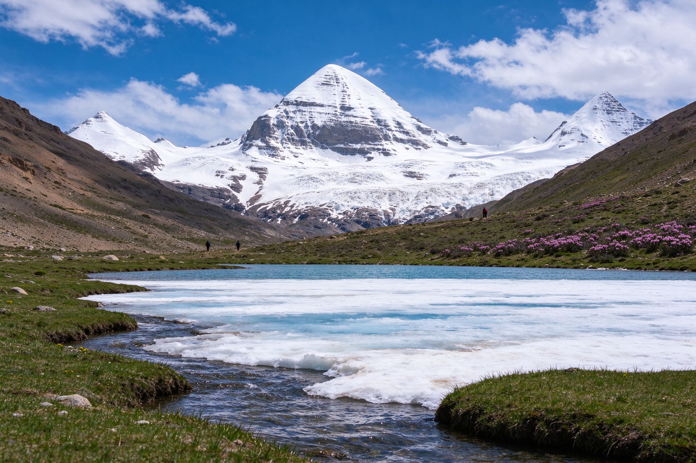

春约 3 月 – 5 月 · 开山节庆
转山开山，萨嘎达瓦
★★★★★
转山路段约 4 月下旬开山，雪峰积雪厚重、湖面陆续解冻，5 月高山杜鹃初开。2026 马年的萨嘎达瓦节（公历 5 月 17 日起）信众云集、神山脚下立塔钦，是一年中最殊胜也最热闹的时段；旱季未结束，晴天概率仍高，唯一要留意的是高原大风与早晚严寒。
优势
- 马年萨嘎达瓦极殊胜
- 雪峰洁白、晴天多
- 杜鹃初开、人比国庆少
留意
- 高原大风、早晚严寒
- 节庆期间床位紧张
- 4 月前转山仍封闭